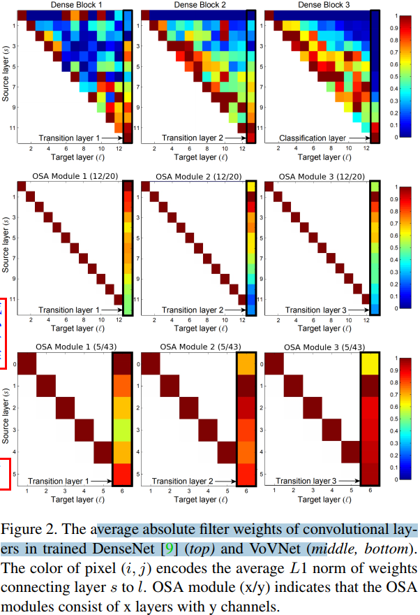
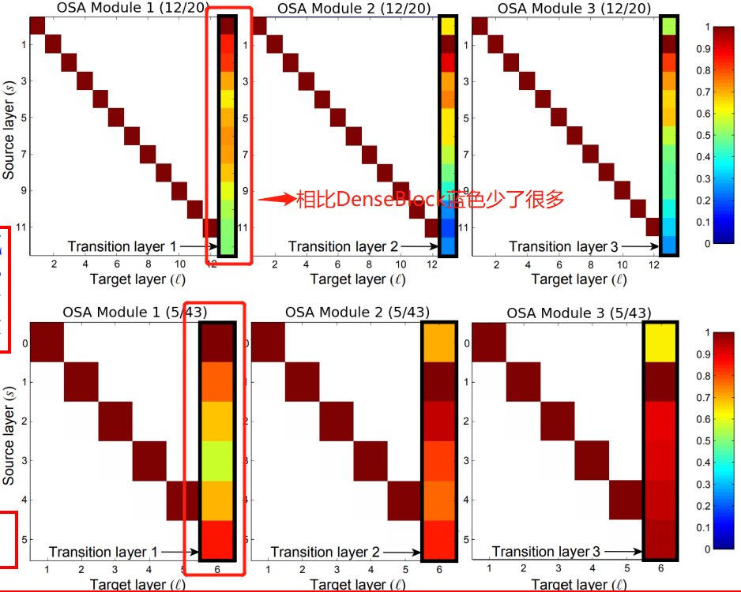
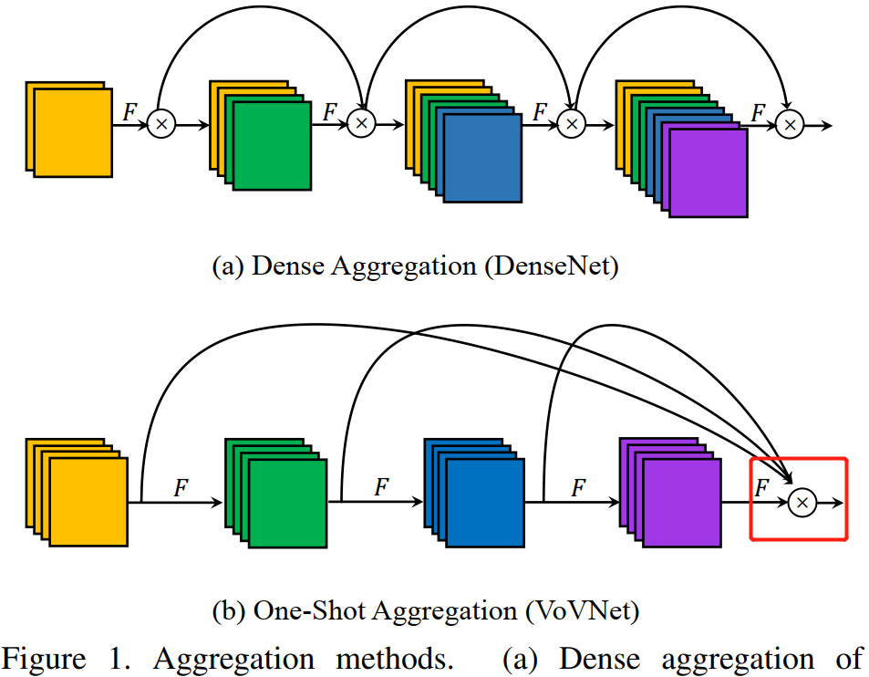
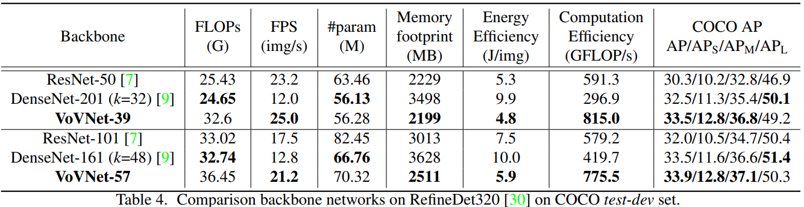

文章同步发于 github、博客园 和 知乎。最新版以
github为主。如果看完文章有所收获，一定要先点赞后收藏。毕竟，赠人玫瑰，手有余香。
摘要
Youngwan Lee*作者于2019年发表的论文 An Energy and GPU-Computation Efficient Backbone Network for Real-Time Object Detection. 是对DenseNet网络推理效率低的改进版本。
因为 DenseNet 通过用密集连接，来聚合具有不同感受野大小的中间特征，因此它在对象检测任务上表现出良好的性能。虽然特征重用（feature reuse）的使用，让 DenseNet 以少量模型参数和 FLOPs，也能输出有力的特征，但是使用 DenseNet 作为 backbone 的目标检测器却表现出了运行速度慢和效率低下的弊端。作者认为是密集连接(dense connection)带来的输入通道线性增长，从而导高内存访问成本和能耗。为了提高 DenseNet 的效率，作者提出一个新的更高效的网络 VoVet，由 OSA（One-Shot Aggregation，一次聚合）组成。OSA 仅在模块的最后一层聚合前面所有层的特征，这种结构不仅继承了 DenseNet 的多感受野表示多种特征的优点，也解决了密集连接效率低下的问题。基于 VoVNet 的检测器不仅速度比 DenseNet 快 2 倍，能耗也降低了 1.5-4.1 倍。另外，VoVNet 网络的速度和效率还优于 ResNet，并且其对于小目标检测的性能有了显著提高。
1，介绍
随着 CNN 模型：VGG、ResNet 和 DensNet 的巨大进步，它们开始被广泛用作目标检测器的 backbone，用来提取图像特征。
ResNet 和 DenseNet 主要的区别在于它们聚合特征的方式，ResNet 是通过逐元素相加（element-wise add）和前面特征聚合，DenseNet 则是通过拼接（concatenation）的方式。Zhu 等人在论文32 中认为前面的特征图携带的信息将在与其他特征图相加时被清除。换句话说，通过 concatenation 的方式，早期的特征才能传递下去，因为它保留了特征的原始形式（没有改变特征本身）。
最近的一些工作 [25, 17, 13] 表明具有多个感受野的抽象特征可以捕捉各种尺度的视觉信息。因为检测任务比分类更加需要多样化尺度去识别对象，因此保留来自各个层的信息对于检测尤为重要，因为网络每一层都有不同的感受野。因此，在目标检测任务上，DenseNet 比 ResNet 有更好更多样化的特征表示。
这是不是说明对于，多标签分类问题，用 VoVNet 作为 backbone，效果要比 ResNet 要好。因为前者可以实现多感受野表示特征。
尽管使用 DenseNet 的检测器的参数量和 FLOPs 都比 ResNet 小，但是前者的能耗能耗和速度却更慢。这是因为，还有其他因素 FLOPs 和模型尺寸（参数量）影响能耗。
首先，内存访问代价 MAC 是影响能耗的关键因素。如图 1(a) 所示，因为 DenseNet 中的所有特征图都被密集连接用作后续层的输入，因此内存访问成本与网络深度成二次方增加，从而导致计算开销和更多的能耗。

从图 (a) 中可以看出，DenseBlock 中的每一层的输入都是前面所有层 feature map 的叠加。而图 (b)只有最后一层的输入是前面所有层 feature map 的叠加。
其次，关于 GPU 的并行计算，DenseNet 有计算瓶颈的限制。一般来说，当操作的张量更大时，GPU 的并行利用率会更高[19,29,13]。
然而，由于为了线性增加输入通道，需要 DenseNet 采用 1×1 卷积 bottleneck 架构来减少输入维度和 FLOPs，这导致使用较小的操作数张量增加层数。作为结果就是 GPU 计算变得低效。总结就是，bottleneck 结构中的 $1\times 1$ 卷积会导致 GPU 并行利用率。
本文的目的在于将 DenseNet 改进的更高效，同时，还保留对目标检测有益的连接聚合（concatenative aggregation）操作。
作者认为 DenseNet 网络 DenseBlock 中间层的密集连接（
dense connections）会导致网络效率低下，并假设相应的密集连接是多余的。
作者使用 OSA 模块构建了 VoVNet 网络，为了验证有效性，将其作为 DSOD、RefineDet 和 Mask R-CNN 的 backbone 来做对比实验。实验结果表明，基于 VoVNet 的检测器优于 DenseNet 和 ResNet，速度和能耗都更优。
2，高效网络设计的影响因素
作者认为，MobileNet v1 [8], MobileNet v2 [21], ShuffleNet v1 [31], ShuffleNet v2 [18], and Pelee 模型主要是通过使用 DW 卷积和 带 $1\times 1$ 卷积的 bottleneck 结构来减少 FLOPs 和模型尺寸（参数量）。
这里我觉得作者表达不严谨，因为 shufflenetv2 在论文中已经声明过，FLOPs 和模型参数量不是模型运行速度的唯一决定因素。
实际上，减少 FLOPs 和模型大小并不总能保证减少 GPU 推理时间和实际能耗，典型的例子就是 DenseNet 和 ResNet 的对比，还有就是在 GPU 平台上， Shufflenetv2 在同等参数条件下，运行速度比 MobileNetv2 更快。这些现象告诉我们，FLOPs 和 模型尺寸（参数）是衡量模型实用性（practicality）的间接指标。为了设计更高效的网络，我们需要使用直接指标 FPS，除了上面说的 FLOPs 和模型参数量会影响模型的运行速度（FPS），还有以下几个因素。
2.1，内存访问代价
这个 Shufflenetv2 作者已经解释得很清楚了，本文的作者的描述基本和 Shufflenetv2 一致。我这里直接给结论：
MAC对能耗的影响超过了计算量FLOPs[28]。- 卷积层输入输出通道数相等时，
MAC取得最小值。 - 即使模型参数量一致，只要
MAC不同，那么模型的运行时间也是不一致的(ShuffleNetv2 有实验证明)。
论文 [28] Designing energy-efficient convolutional neural networks using energyaware pruning.
2.2，GPU计算效率
其实这个内容和 shufflenetv2 论文中的 G3 原则（网络碎片化会降低 GPU 并行度）基本一致。
为提高速度而降低 FLOPs 的网络架构基于这样一种理念，即设备中的每个浮点运算都以相同的速度进行处理。但是，当模型部署在 GPU 上时，不是这样的，因为 GPU 是并行处理机制能同时处理多个浮点运算进程。我们用 GPU 计算效率来表示 GPU 的运算能力。
- 通过减少
FLOPs是来加速的前提是，设备中的每个浮点运算都以相同的速度进行处理； - GPU 特性：
- 擅长
parallel computation，tensor越大，GPU使用效率越高。 - 把大的卷积操作拆分成碎片的小操作将不利于
GPU计算。
- 擅长
- 因此，设计
layer数量少的网络是更好的选择。MobileNet使用额外的 1x1 卷积来减少计算量，不过这不利于 GPU 计算。 - 为了衡量 GPU 利用率，引入有一个新指标：$FLOP/s = \frac{FLOPs}{GPU\ inference\ time}$（每秒完成的计算量
FLOPs per Second），FLOP/s 高，则GPU利用率率也高。
3，建议的方法
3.1，重新思考密集连接
1，DenseNet 的优点：
在计算第 $l$ 层的输出时，要用到之前所有层的输出的 concat 的结果。这种密集的连接使得各个层的各个尺度的特征都能被提取，供后面的网络使用。这也是它能得到比较高的精度的原因，而且密集的连接更有利于梯度的回传（ResNet shorcut 操作的加强版）。
2，DenseNet 缺点（导致了能耗和推理效率低的）：
- 密集连接会增加输入通道大小，但输出通道大小保持不变，导致的输入和输出通道数都不相等。因此，DenseNet 具有具有较高的 MAC。
- DenseNet 采用了
bottleneck结构，这种结构将一个 $3\times 3$ 卷积分成了两个计算（1x1+3x3 卷积），这带来了更多的序列计算（sequential computations），导致会降低推理速度。
密集连接会导致计算量增加，所以不得不采用 $1\times 1$ 卷积的
bottleneck结构。
图 7 的第 1 行是 DenseNet 各个卷积层之间的相互关系的大小。第 $(s,l)$ 块代表第 $s$ 层和第 $l$ 层之间这个卷积权值的平均 $L_1$ 范数（按特征图数量归一化后的 L1 范数）的大小，也就相当于是表征 $X_s$ 和 $X_l$ 之间的关系。
图 2. 训练后的 DenseNet(顶部) 和 VoVNet(中间和底部) 中卷积层的滤波器权重的绝对值的平均值。像素块的颜色表示的是相互连接的网络层(i, j)的权重的平均 $L_1$ 范数（按特征图数量归一化后的 L1 范数）的值。OSA Module (x/y) 指的是 OSA 模块由 $x$ 层和 $y$ 个通道组成。

如图 2 顶部图所示， Hu 等人[9]通过评估每层输入权重归一化后的 L1 范数来说明密集连接的连通性（connectivity），这些值显示了前面所有层对相应层的归一化影响，1 表示影响最大，0 表示没有影响（两个层之间的权重没有关系）。
这里重点解释下连通性的理解。两层之间的输入权重的绝对值相差越大，即 L1 越大，那么说明卷积核的权重越不一样，前面层对后面层影响越大（
connectivity），即连通性越好（大）。从实用性角度讲，我们肯定希望相互连接的网络层的连通性越大越好（归一化后是 0~1 范围），这样我的密集连接才起作用了嘛。不然，耗费了计算量、牺牲了效率，但是连通性结果又差，那我还有必要设计成密集连接（dense connection）。作者通过图 2 后面的两张图也证明了DenseBlock 模块中各个层之间的联系大部分都是没用，只有少部分是有用的，即密集连接中大部分网络层的连接是无效的。
在 Dense Block3 中，对角线附近的红色框表示中间层（intermediate layers）上的聚合处于活动状态，但是分类层（classification layer）只使用了一小部分中间特征。 相比之下，在 Dense Block1 中，过渡层（transition layer）很好地聚合了其大部分输入特征，而中间层则没有。
Dense Block3 的分类层和 Dense Block1 的过渡层都是模块的最后一层。
通过前面的观察，我们先假设中间层的聚集强度和最后一层的聚集强度之间存在负相关（中间层特征层的聚合能力越好，那么最后层的聚合能力就越弱）。如果中间层之间的密集连接导致了每一层的特征之间存在相关性，则密集连接会使后面的中间层产生更好的特征的同时与前一层的特征相似，则假设成立。在这种情况下，因为这两种特征代表冗余信息，所以最后一层不需要学习聚合它们，从而前中间层对最终层的影响变小。
因为最后一层的特征都是通过聚集（aggregated）所有中间层的特征而产生的，所以，我们当然希望中间层的这些特征能够互补或者相关性越低越好。因此，进一步提出假设，相比于造成的损耗，中间特征层的 dense connection 产生的作用有限。为了验证假设，我们重新设计了一个新的模块 OSA，该模块仅在最后一层聚合块中其他层的特征（intermediate features），把中间的密集连接都去掉。
3.2，One-Shot Aggregation
为了验证我们的假设，中间层的聚合强度和最后一层的聚合强度之间存在负相关，并且密集连接是多余的，我们与 Hu 等人进行了相同的实验，实验结果是图 2 中间和底部位置的两张图。

从图 2（中间）可以观察到，随着中间层上的密集连接被剪掉，最终层中的聚合变得更加强烈。同时，蓝色的部分 (联系大部分不紧密的部分) 明显减少了很多，也就是说 OSA 模块的每个连接都是相对有用的。
从图 2（底部）的可以观察到，OSA 模块的过渡层的权重显示出与 DenseNet 不同的模式：来自浅层的特征更多地聚集在过渡层上。由于来自深层的特征对过渡层的影响不大，我们可以在没有显着影响的情况下减少 OSA 模块的层数，得到。令人惊讶的是，使用此模块（5 层网络），我们实现了 5.44% 的错误率，与 DenseNet-40 （模块里有 12 层网络）的错误率（5.24%）相似。这意味着通过密集连接构建深度中间特征的效果不如预期（This implies that building deep intermediate feature via dense connection is less effective than expected）。
One-Shot Aggregation（只聚集一次）是指 OSA 模块的 concat 操作只进行一次，即只有最后一层的输入是前面所有层 feature map 的 concat（叠加）。OSA 模块的结构图如图 1(b) 所示。

在 OSA 模块中，每一层产生两种连接，一种是通过 conv 和下一层连接，产生 receptive field 更大的 feature map，另一种是和最后的输出层相连，以聚合足够好的特征。
为了验证 OSA 模块的有效性，作者使用 dense block 和 OSA 模块构成 DenseNet-40网络，使两种模型参数量一致，做对比实验。OSA 模板版本在 CIFAR-10 数据集上的精度达到了 93.6，和 dense block 版本相比，只下降了 1.2%。再根据 MAC 的公式，可知 MAC 从 3.7M 减少为 2.5M。MAC 的降低是因为 OSA 中的中间层具有相同大小的输入输出通道数，从而使得 MAC 可以取最小值（lower boundary）。
因为 OSA 模块中间层的输入输出通道数一致，所以没必要使用 bottleneck 结构，这又进一步提高了 GPU 利用率。
3.3，构建 VoVNet 网络
因为 OSA 模块的多样化特征表示和效率，所以可以通过仅堆叠几个模块来构建精度高、速度快的 VoVNet 网络。基于图 2 中浅层深度更容易聚合的认识，作者认为可以配置比 DenseNet 具有更大通道数的但更少卷积层的 OSA 模块。
如下图所示，分别构建了 VoVNet-27-slim，VoVNet-39， VoVNet-57。注意，其中downsampling 层是通过 3x3 stride=2 的 max pooling 实现的，conv 表示的是 Conv-BN-ReLU 的顺序连接。

VOVNet 由 5 个阶段组成，各个阶段的输出特征大小依次降为原来的一半。VOVNet-27 前 2 个 stage 的连接图如下所示。

4，实验
GPU 的能耗计算公式如下：

实验1： VoVNet vs. DenseNet. 对比不同 backbone 下的目标检测模型性能(PASCALVOC)

对比指标：
- Flops：模型需要的计算量
- FPS：模型推断速度img/s
- Params：参数数量
- Memory footprint：内存占用
- Enegry Efficiency：能耗
- Computation Efficiency：GPU 计算效率（GFlops/s）
- mAP（目标检测性能评价指标）
现象与总结：
- 现象 1：相比于 DenseNet-67，PeleeNet 减少了 Flops，但是推断速度没有提升，与之相反，VoVNet-27-slim 稍微增加了Flops，而推断速度提升了一倍。同时，VoVNet-27-sli m的精度比其他模型都高。
- 现象 2：VoVNet-27-slim 的内存占用、能耗、GPU 利用率都是最高的。
- 结论 1：相比其他模型，VoVNet做到了准确率和效率的均衡，提升了目标检测的整体性能。
实验2：Ablation study on 1×1 conv bottleneck.

结论 2：可以看出，1x1 bottleneck 增加了 GPU Inference 时间，降低了 mAP，尽管它减少了参数数量和计算量。
因为 1x1 bottleneck 增加了网路的总层数，需要更多的激活层，从而增加了内存占用。
实验3： GPU-Computation Efficiency.

- 图3(a) VoVNet 兼顾准确率和 Inference 速度
- 图3(b) VoVNet 兼顾准确率和 GPU 使用率
- 图3(c) VoVNet 兼顾准确率和能耗
- 图3(d) VoVNet 兼顾能耗和 GPU 使用率
实验室4：基于RefineDet架构比较VoVNet、ResNet和DenseNet。

结论 4：从 COCO 数据集测试结果看，相比于 ResNet，VoVnet在 Inference 速度，内存占用，能耗，GPU 使用率和准确率上都占据优势。尽管很多时候，VoVNet 需要更多的计算量以及参数量。
- 对比 DenseNet161(k=48) 和 DenseNet201(k=32)可以发现，深且”瘦“的网络，GPU 使用率更低。
- 另外，作者发现相比于 ResNet，VoVNet 在小目标上的表现更好。
实验 5：Mask R-CNN from scratch.
通过替换 Mask R-CNN 的 backbone，也发现 VoVNet 在Inference 速度和准确率上优于 ResNet。

5，代码解读
虽然 VoVNet 在 CenterMask 论文 中衍生出了升级版本 VoVNetv2，但是本文的代码解读还是针对原本的 VoVNet，代码来源这里。
1，定义不同类型的卷积函数
def conv3x3(in_channels, out_channels, module_name, postfix,
stride=1, groups=1, kernel_size=3, padding=1):
"""3x3 convolution with padding. conv3x3, bn, relu的顺序组合
"""
return [
('{}_{}/conv'.format(module_name, postfix),
nn.Conv2d(in_channels, out_channels,
kernel_size=kernel_size,
stride=stride,
padding=padding,
groups=groups,
bias=False)),
('{}_{}/norm'.format(module_name, postfix),
nn.BatchNorm2d(out_channels)),
('{}_{}/relu'.format(module_name, postfix),
nn.ReLU(inplace=True)),
]
def conv1x1(in_channels, out_channels, module_name, postfix,
stride=1, groups=1, kernel_size=1, padding=0):
"""1x1 convolution"""
return [
('{}_{}/conv'.format(module_name, postfix),
nn.Conv2d(in_channels, out_channels,
kernel_size=kernel_size,
stride=stride,
padding=padding,
groups=groups,
bias=False)),
('{}_{}/norm'.format(module_name, postfix),
nn.BatchNorm2d(out_channels)),
('{}_{}/relu'.format(module_name, postfix),
nn.ReLU(inplace=True)),
]
2，其中 OSA 模块结构的代码如下。
class _OSA_module(nn.Module):
def __init__(self,
in_ch,
stage_ch,
concat_ch,
layer_per_block,
module_name,
identity=False):
super(_OSA_module, self).__init__()
self.identity = identity # 默认不使用恒等映射
self.layers = nn.ModuleList()
in_channel = in_ch
# stage_ch: 每个 stage 内部的 channel 数
for i in range(layer_per_block):
self.layers.append(nn.Sequential(
OrderedDict(conv3x3(in_channel, stage_ch, module_name, i))))
in_channel = stage_ch
# feature aggregation
in_channel = in_ch + layer_per_block * stage_ch
# concat_ch: 1×1 卷积输出的 channel 数
# 也从 stage2 开始，每个 stage 最开始的输入 channnel 数
self.concat = nn.Sequential(
OrderedDict(conv1x1(in_channel, concat_ch, module_name, 'concat')))
def forward(self, x):
identity_feat = x
output = []
output.append(x)
for layer in self.layers: # 中间所有层的顺序连接
x = layer(x)
output.append(x)
# 最后一层的输出要和前面所有层的 feature map 做 concat
x = torch.cat(output, dim=1)
xt = self.concat(x)
if self.identity:
xt = xt + identity_feat
return xt
3，定义 _OSA_stage，每个 stage 有多少个 OSA 模块，由 _vovnet 函数的 block_per_stage 参数指定。
class _OSA_stage(nn.Sequential):
"""
in_ch: 每个 stage 阶段最开始的输入通道数（feature map 数量）
"""
def __init__(self,
in_ch,
stage_ch,
concat_ch,
block_per_stage,
layer_per_block,
stage_num):
super(_OSA_stage, self).__init__()
if not stage_num == 2:
self.add_module('Pooling',
nn.MaxPool2d(kernel_size=3, stride=2, ceil_mode=True))
module_name = f'OSA{stage_num}_1'
self.add_module(module_name,
_OSA_module(in_ch,
stage_ch,
concat_ch,
layer_per_block,
module_name))
for i in range(block_per_stage-1):
module_name = f'OSA{stage_num}_{i+2}'
self.add_module(module_name,
_OSA_module(concat_ch,
stage_ch,
concat_ch,
layer_per_block,
module_name,
identity=True))
4，定义 VOVNet，
class VoVNet(nn.Module):
def __init__(self,
config_stage_ch,
config_concat_ch,
block_per_stage,
layer_per_block,
num_classes=1000):
super(VoVNet, self).__init__()
# Stem module --> stage1
stem = conv3x3(3, 64, 'stem', '1', 2)
stem += conv3x3(64, 64, 'stem', '2', 1)
stem += conv3x3(64, 128, 'stem', '3', 2)
self.add_module('stem', nn.Sequential(OrderedDict(stem)))
stem_out_ch = [128]
# vovnet-57，in_ch_list 结果是 [128, 256, 512, 768]
in_ch_list = stem_out_ch + config_concat_ch[:-1]
self.stage_names = []
for i in range(4): #num_stages
name = 'stage%d' % (i+2)
self.stage_names.append(name)
self.add_module(name,
_OSA_stage(in_ch_list[i],
config_stage_ch[i],
config_concat_ch[i],
block_per_stage[i],
layer_per_block,
i+2))
self.classifier = nn.Linear(config_concat_ch[-1], num_classes)
for m in self.modules():
if isinstance(m, nn.Conv2d):
nn.init.kaiming_normal_(m.weight)
elif isinstance(m, (nn.BatchNorm2d, nn.GroupNorm)):
nn.init.constant_(m.weight, 1)
nn.init.constant_(m.bias, 0)
elif isinstance(m, nn.Linear):
nn.init.constant_(m.bias, 0)
def forward(self, x):
x = self.stem(x)
for name in self.stage_names:
x = getattr(self, name)(x)
x = F.adaptive_avg_pool2d(x, (1, 1)).view(x.size(0), -1)
x = self.classifier(x)
return x
5，VoVNet 各个版本的实现。vovnet57 中有 4 个 stage，每个 stage 的 OSP 模块数目依次是 [1,1,4,3]，每个 个 stage 内部对应的通道数都是一样的，分别是 [128, 160, 192, 224]。每个 stage 最后的输出通道数分别是 [256, 512, 768, 1024]，由 concat_ch 参数指定。
所有版本的 vovnet 的 OSA 模块中的卷积层数都是 5。
def _vovnet(arch,
config_stage_ch,
config_concat_ch,
block_per_stage,
layer_per_block,
pretrained,
progress,
**kwargs):
model = VoVNet(config_stage_ch, config_concat_ch,
block_per_stage, layer_per_block,
**kwargs)
if pretrained:
state_dict = load_state_dict_from_url(model_urls[arch],
progress=progress)
model.load_state_dict(state_dict)
return model
def vovnet57(pretrained=False, progress=True, **kwargs):
r"""Constructs a VoVNet-57 model as described in
`"An Energy and GPU-Computation Efficient Backbone Networks"
<https://arxiv.org/abs/1904.09730>`_.
Args:
pretrained (bool): If True, returns a model pre-trained on ImageNet
progress (bool): If True, displays a progress bar of the download to stderr
"""
return _vovnet('vovnet57', [128, 160, 192, 224], [256, 512, 768, 1024],
[1,1,4,3], 5, pretrained, progress, **kwargs)
def vovnet39(pretrained=False, progress=True, **kwargs):
r"""Constructs a VoVNet-39 model as described in
`"An Energy and GPU-Computation Efficient Backbone Networks"
<https://arxiv.org/abs/1904.09730>`_.
Args:
pretrained (bool): If True, returns a model pre-trained on ImageNet
progress (bool): If True, displays a progress bar of the download to stderr
"""
return _vovnet('vovnet39', [128, 160, 192, 224], [256, 512, 768, 1024],
[1,1,2,2], 5, pretrained, progress, **kwargs)
def vovnet27_slim(pretrained=False, progress=True, **kwargs):
r"""Constructs a VoVNet-39 model as described in
`"An Energy and GPU-Computation Efficient Backbone Networks"
<https://arxiv.org/abs/1904.09730>`_.
Args:
pretrained (bool): If True, returns a model pre-trained on ImageNet
progress (bool): If True, displays a progress bar of the download to stderr
"""
return _vovnet('vovnet27_slim', [64, 80, 96, 112], [128, 256, 384, 512],
[1,1,1,1], 5, pretrained, progress, **kwargs)